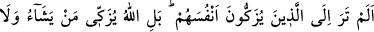
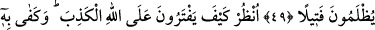
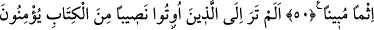
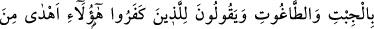
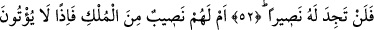
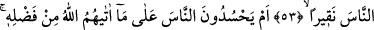
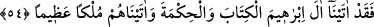
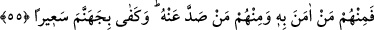

YAHÛDÎ TÎNETİ
49- Kendilerini temize çıkaranları görmedin mi? Hayır, Allah dilediğini temize
çıkarır ve hiç kimse kıl payı kadar haksızlık görmez.
50- Bak, nasıl da Allah’a yalan yere iftirâda bulunuyorlar; apaçık bir günah
olarak bu (onlara) yeter!
51- Kendilerine Kitap’tan nasip verilenleri görmedin mi? Putlara ve bâtıla îmân
ediyorlar, sonra da kâfirler için: «Bunlar, Allah’a îmân edenlerden daha doğru
yoldadır» diyorlar!
52- Bunlar, Allah’ın lânetlediği kimselerdir; Allah’ın rahmetinden uzaklaştırdığı
(lânetli) kimseye gerçek bir yardımcı bulamazsın.
53- Yoksa onların mülkten bir nasipleri mi var? Öyle olsaydı insanlara çekirdek
zerresi bile vermezlerdi.
54- Yoksa onlar, Allah’ın lütfundan verdiği şeyler için insanlara hased mi
ediyorlar? Oysa İbrahim soyuna Kitab’ı ve hikmeti verdik ve onlara büyük bir
hükümranlık bahşettik.
55- Onlardan bir kısmı ona inandı, kimi de ondan yüz çevirdi; (onlara) kavurucu
bir ateş olarak cehennem yeter.
“Kendilerini temize çıkaranları görmedin mi?” Hitap taaccüb şeklinde Peygamber
(a.s)’adır. Yâni, gerçekten, nefislerini tezkiye edip arındırmadıkları halde “Biz
Allah’ın oğulları ve sevgilileriyiz”, (el-Mâide, 5/18) “Biz küçük çocuklar gibiyiz. Hiç
onların günahı olur mu?” sözleriyle nefislerini ve lisanlarını günahlardan temiz